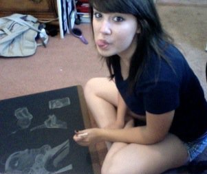

•••••••••• Brittney Barry •••••••••••
Biography
I got into designing a little later than most of my peers.
I first majored in Zoology when I started college.
My classes were lab based and we had to draw many illustrations of animal anatomies as
we dissected them. I was complimented on my work/notes for looking the best and after 3 years
I decided to switch to graphic design. My work consists of using my science background of plants
and animals into unique and detailed designs. I also tend to use lots of geometric shapes for a simplistic approach.
I'll always have a love for science and animals and I strive to show that through my designs.
Contact me by email: bbbarry_4@yahoo.com
Brittney Barry